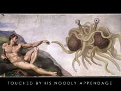

(or, if you can't work out to click ont the picture, go here: Behold!!!)
I'm just interested in what people think - I reckon it's a great idea.

QuoteApparently there may be some problems with the mugs.
Dear Bobby,
I have recently purchased one of your coffee mugs, but it is giving me
no end of grief. Every time I put coffee, hot chocolate, or hot tea in
the mug, it instantly transubstantiates into what I assume is the blood
of the Flying Spaghetti Monster. It sort of looks like marinara sauce,
but I'm afraid to taste it. Curiously, when I put wine into the mug,
it just turns into a nice, full-bodied chianti -- beer does the same
thing. Is there any act of sacrifice or ritual that I can perform to
stop these miracles from occurring? While I bask in His greatness and
I am truly awed by His power, I'm also kind of thirsty. Any advice
would be welcome.
Sebastian Wren, Ph.D.
Austin.Texas

QuoteI think we can all look forward to the time when these three theories are given equal time in our science classrooms across the country, and eventually the world; One third time for Intelligent Design, one third time for Flying Spaghetti Monsterism, and one third time for logical conjecture based on overwhelming observable evidence.
 ....
....
Rubbish, says me.